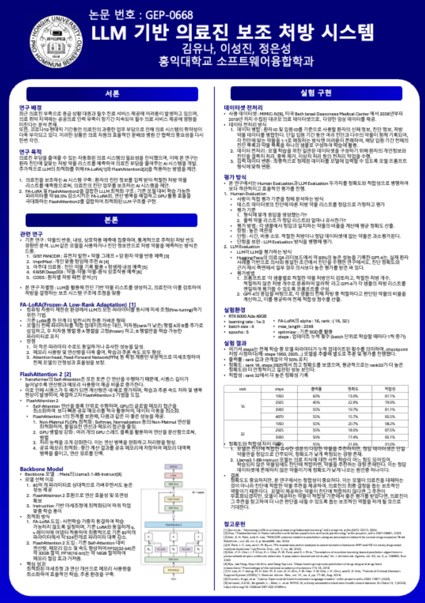

01. Project Overview
본 프로젝트는 의료진 부족과 업무 과중 문제를 보완하기 위해, 환자의 진단 정보를 기반으로 적절한 처방 약물 리스트를 생성하는 LLM 기반 의료진 보조 시스템을 구축한 연구 프로젝트입니다.
기존 의료 AI 연구가 약물 반응 예측, 항생제 내성 예측, 약물 상호작용 분석에 집중하는 경우가 많았다면, 본 프로젝트는 환자의 진단 정보를 입력으로 받아 처방 약물 리스트 전체를 생성하는 방향에 초점을 맞췄습니다.
02. Motivation & Goal
Research Motivation
최근 의료진 부족과 의료 시스템의 업무 부담 증가로 인해, 응급 상황 대응과 필수 진료 서비스 제공에 어려움이 발생하고 있습니다. 이러한 상황에서 의료진의 의사결정을 보조할 수 있는 AI 기반 시스템의 필요성이 커지고 있습니다.
특히 처방 결정은 환자의 진단, 상태, 처치 정보를 종합적으로 고려해야 하는 복잡한 작업입니다. 이에 본 프로젝트에서는 LLM이 진단 정보와 처방 약물 간의 관계를 학습하여 의료진에게 참고 가능한 처방 약물 리스트를 생성할 수 있는지 확인하고자 했습니다.
Research Goal
- 환자 진단 정보를 기반으로 처방 약물 리스트를 생성하는 LLM 기반 시스템 구축
- MIMIC-IV 의료 데이터를 활용한 학습 데이터셋 구성
- 진단 및 환자 정보를 LLM 입력 프롬프트 형식으로 변환
- Llama3.1-8B-Instruct 기반 처방 약물 생성 실험 수행
- Human Evaluation과 GPT-4 Evaluation을 병행한 정확도 및 적합성 평가
- 제한된 GPU 환경에서 학습 가능한 LLM 최적화 구조 검토
03. My Role
Data Preprocessing
MIMIC-IV 데이터에서 환자 정보, 진단 정보, 처치 정보, 처방 약물 데이터를 병합하고, 결측치 처리, 중복 제거, 이상치 처리 등을 수행하여 LLM 학습용 데이터셋을 구성했습니다.
Prompt Design
환자 정보와 진단 정보를 LLM이 이해할 수 있는 입력 형식으로 변환하고, 진단에 맞는 처방 약물 리스트를 정해진 형식으로 출력하도록 프롬프트 구조를 설계했습니다.
LLM Fine-tuning
Llama3.1-8B-Instruct 모델을 기반으로 처방 약물 리스트 생성 태스크에 맞춰 파인튜닝 실험을 수행했습니다. rank와 step 조건을 달리하며 출력률, 정확도, 적합성 변화를 비교했습니다.
FlashAttention2 적용
LLM 학습 과정에서 Self-Attention 연산의 메모리 사용량과 연산 병목을 줄이기 위해 FlashAttention2를 적용하고, 제한된 GPU 환경에서 학습 효율을 높일 수 있도록 구성했습니다.
Evaluation Design
Human Evaluation과 GPT-4 기반 LLM Evaluation을 함께 활용하여, 모델의 정답 일치 정확도와 의료적 적합성을 모두 평가할 수 있도록 평가 방식을 구성했습니다.
Result Analysis
rank 16/32 및 step별 실험 결과를 비교하고, 정확도와 적합성 차이가 발생하는 원인을 데이터셋의 처방 다양성과 의료적 대체 가능성 관점에서 분석했습니다.
04. Dataset & Preprocessing
본 연구에서는 MIMIC-IV 데이터셋을 활용했습니다. MIMIC-IV는 중환자실 환자 기록을 포함하는 대규모 의료 데이터셋으로, 생체 정보, 진단, 처치, 처방 약물 등 다양한 임상 데이터를 포함합니다.
05. Model & Training
Backbone 모델로는 Meta의 Llama3.1-8B-Instruct를 사용했습니다. 해당 모델은 8B 규모의 비교적 작은 파라미터 수로도 instruction 기반 작업에 적합하며, 제한된 GPU 환경에서 실험 가능한 구조를 제공합니다.
Backbone Model
Llama3.1-8B-Instruct 모델을 기반으로 처방 약물 리스트 생성 실험을 수행했습니다.
Optimization
FA-LoRA와 FlashAttention2를 활용하여 학습 가능한 파라미터 수와 메모리 사용량을 줄이는 방향으로 실험했습니다.
Training Setting
RTX 6000 Ada 48GB 환경에서 learning rate 1e-3, batch size 4, rank 16/32 조건을 비교했습니다.
Output Format
모델이 진단 정보를 바탕으로 처방 약물 리스트를 정해진 형식으로 생성하도록 구성했습니다.

Llama3.1-8B-Instruct 기반 모델 구조
06. Evaluation Method
LLM 기반 처방 약물 생성 결과는 단순한 정답 일치만으로 평가하기 어렵습니다. 같은 진단에 대해 유사 효능을 가진 다른 약물이 적절할 수 있기 때문입니다. 따라서 본 프로젝트에서는 Human Evaluation과 GPT-4 기반 LLM Evaluation을 함께 사용했습니다.
Human Evaluation
테스트 데이터셋의 약물 리스트를 정답으로 보고, 모델 출력 약물 중 정답과 일치하는 비율을 계산했습니다.
GPT-4 Evaluation
GPT-4를 활용하여 모델이 추천한 약물이 진단에 의료적으로 적절한지 평가하고 적합성 점수를 산출했습니다.
Accuracy
출력된 약물 리스트가 실제 데이터셋의 처방 약물과 얼마나 일치하는지를 측정했습니다.
Appropriateness
정답과 완전히 일치하지 않더라도, 진단에 적절한 약물인지 평가하여 의료적 타당성을 확인했습니다.
07. Experiment Results
FA-LoRA의 rank 값을 16과 32로 설정하고, 학습 step을 달리하여 출력률, 정확도, 적합성을 비교했습니다.
Best Accuracy
rank 16, 2925 steps 조건에서 가장 높은 정확도를 기록했습니다.
Best Appropriateness
rank 32, 1950 steps 조건에서 가장 높은 적합성을 기록했습니다.
Response Rate
rank 값과 관계없이 전체적으로 약 55% 수준의 출력률을 보였습니다.
Trainable Parameters
FA-LoRA 적용 시 학습 가능한 파라미터 수를 크게 줄일 수 있었습니다.
| Rank | Steps | 출력률 | 정확도 | 적합성 |
|---|---|---|---|---|
| 16 | 1950 | 60% | 13.0% | 81.1% |
| 16 | 2925 | 45% | 22.9% | 79.9% |
| 16 | 3900 | 55% | 19.7% | 81.1% |
| 16 | 4870 | 55% | 15.7% | 85.5% |
| 32 | 1950 | 55% | 20.7% | 98.2% |
| 32 | 2925 | 55% | 18.5% | 87.5% |
| 32 | 3900 | 50% | 17.4% | 85.1% |
| 32 | 4870 | 55% | 21.6% | 91.0% |
08. Conclusion
본 프로젝트는 환자의 진단 정보를 기반으로 적절한 처방 약물 리스트를 추천하는 LLM 기반 의료진 보조 시스템의 가능성을 확인했습니다. FA-LoRA와 FlashAttention2를 적용함으로써 제한된 GPU 환경에서도 LLM 학습 실험을 수행할 수 있었고, Human Evaluation과 GPT-4 Evaluation을 통해 정확도와 적합성을 함께 분석했습니다.
실험 결과, 정답 데이터셋과의 직접 일치율인 정확도는 낮게 측정되었지만, GPT-4 기반 적합성 평가에서는 높은 점수를 기록했습니다. 이는 모델이 실제 정답과 완전히 동일한 약물을 출력하지 않더라도, 진단에 적합한 약물 후보를 생성할 수 있음을 보여줍니다.
09. Paper / Presentation
본 프로젝트는 2025 대한전자공학회 하계학술대회 논문으로 작성되었으며, 아래에서 발표 포스터와 논문 파일을 확인할 수 있습니다.
Presentation Poster

대한전자공학회 하계학술대회 발표 포스터
Paper File
논문 PDF 파일은 아래 버튼을 통해 확인할 수 있습니다.
논문 PDF 보기 →10. Source Code
프로젝트 코드 또는 실험 자료는 아래 GitHub 저장소에서 확인할 수 있습니다.
GitHub Repository 보기 →